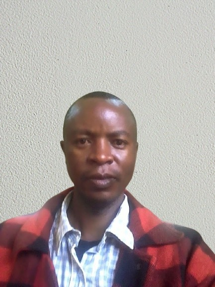

Hello! I’m Simon Thuo Ndirangu, currently studying web development. I enjoy learning how to create interactive and user-friendly websites that make a difference. I will be glad to meet other developers here.